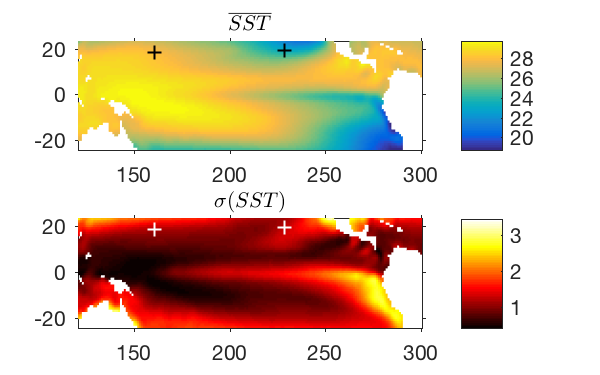

class: center, middle .title[Lecture 5: Eigen Methods] .author[Shane Elipot] .institution[The Rosenstiel School of Marine and Atmospheric Science, University of Miami] .author[] .institution[] .date[] .note[] .footnote[Created with [{Remark.js}](http://remarkjs.com/) using [{Markdown}](https://daringfireball.net/projects/markdown/) + [{MathJax}](https://www.mathjax.org/)] --- name: names class: left, .toc[[✧](#toc)] ## Many names *Eigen methods* encompass methods such as Empirical Orthogonal Function analysis (EOF), Singular Value Decomposition analysis (SVD), Principal Component Analysis (PCA), Factor analysis, ... -- ... and their variants such as Combined EOF, Combined PCA, Canonical Correlation Analysis, Complex EOF, Conditional MCA, etc. -- *Eigen* is a German word which means ...? -- "own". It can be translated into "proper", or "characteristic". We will eventually see why these methods are called as such. It comes from the mathematics of the methods. --- class: left, .toc[[✧](#toc)] ## References Books: Preisendorfer and Mobley (1988): Principal Component Analysis in Meteorology and Oceanography, Elsevier, New York. von Storch and Zwiers (2002): Statistical Analysis in Climate Research, Cambridge University Press, Cambridge. Emery and Thomson (2001): Data analysis methods in physical oceanography. Elsevier, second and revised edition. Menke (2012), Environmental data analysis with MatLab. --- class: left, .toc[[✧](#toc)] ## References Papers: Bretherton C, Smith C, Wallace J, et al. (1992), J. Clim. 5(6): 541–560. (cited 1425 times according to Google Scholar) Venegas S, Mysak L, Straub D. (1996), Geophys. Res. Lett. 23(19): 2673–2676. Barnett T. 1983, Monthly Weather Review 111: 756–773. [For complex EOFs, but watch out the part about vectors, I think it's wrong] Merrifield M, Guza R. 1990., J. Phys. Oceanogr. 20(10): 1628–1633. [About being cautious with complex EOFs] Elipot S. and Beal L.M., 2015, [doi:10.1175/JPO-D-14-0254.1](#http://dx.doi.org/0.1175/JPO-D-14-0254.1) [For Complex EOF method for vector variables] Elipot et al. 2017, [doi: 10.1175/JCLI-D-16-0664.1](#http://dx.doi.org/ 10.1175/JCLI-D-16-0664.1) [For Complex SVD method] --- name: toc class: left, .toc[[✧](#toc)] # Outline 1. [Introduction](#introduction) 2. [Two variate example](#bivariate) 3. [N-variate case: that's Empirical Orthogonal Functions analysis (EOF)](#nvariate) 4. [Two N-variate case: that's Singular Value Decomposition (SVD)](#svd) --- name: introduction class: center, middle, .toc[[✧](#toc)] # 1. Introduction --- class: center, middle, .toc[[✧](#toc)] ## The **Preisendorfer** approach: A *multivariate* dataset is turned into a set of *Principal Components* multivariate = $N$-variable dataset (univariate $N = 1$, bivariate $N=2$, etc.) ## The **Menke** approach: Factor Analysis a *sample* is a linear *loading* of *factors* or the *data* can be decomposed into *modes* --- name: bivariate class: center, middle .toc[[✧](#toc)] # 2. Two variate example --- class: left, .toc[[✧](#toc)] ## Example Consider a dataset of monthly means of Sea Surface temperature (SST), the NOAA Optimum Interpolation (OI) Sea Surface Temperature (SST) V2 at 1$^\circ$ resolution. Let's consider the Tropical Pacific Ocean. These plots show the mean and standard deviation (1982-2016) at each grid point: .center[] --- class: left, .toc[[✧](#toc)] Let's consider only two data points, thus defining a *bivariate* dataset: `$X_1 = SST(160^o \text{E},18^o \text{N}), \quad X_2 = SST(131^o \text{E},19^o \text{N})$` Correlations with or without seasonal cycle:`$\quad \rho_{X_1 X_2} = 0.60,\quad \rho_{X_1 X_2} = -0.27$` --- class: left, middle, .toc[[✧](#toc)] ## Scatter plot & statistics Let's consider some simple statistics: .right-column[ Mean: `$\overline{X_j} \equiv \frac{1}{N} \sum^N_{n=1} X_j(n)$` Anomaly: `$X'_j(n) = X_j(n) - \overline{X_j}$` Sample covariance: `$S_{X_j X_k} \equiv \frac{1}{N-1} \sum_{n=1}^N X'_j(n) X'_k(n)$` Sample (auto-co)variance: `$S_{X_1 X_1},\, S_{X_2X_2}$` Sample (cross-)covariance: `$S_{X_1 X_2}$` ] .left-column[ ] --- class: left, .toc[[✧](#toc)] ## Scatter plot & statistics .left-column[ ] .right-column[ Standard deviations: `$\begin{array} \\ \sqrt{S_{X_1 X_1}} = 1.12 \\ \sqrt{S_{X_2 X_2}} = 1.27 \\ \end{array}$` Covariance: `$ S_{X_1 X_2} = 0.93^2$` Correlation coefficient: `$\rho_{12} = \frac{S_{X_1 X_2}}{\sqrt{S_{X_1 X_1} S_{X_2 X_2}}} = 0.60$` Regression coefficient (slope): `$\alpha = \frac{S_{X_1 X_2}}{S_{X_1 X_1}} = \frac{0.93^2}{1.12^2} = 0.69$` ] --- class: left, .toc[[✧](#toc)] ### Matrix notations (1) To simplify notations, we will use matrices. We define the *data vector and matrices* (forgetting the "primes"): `$\mathbf{X}_1 = \left[\matrix{ X_1(1) \cr X_1(2) \cr \vdots \cr X_1(N) }\right], \mathbf{X}_2 = \left[\matrix{ X_2(1) \cr X_2(2) \cr \vdots \cr X_2(N) }\right], \mathbf{X} = \left[\matrix{ X_1(1) & X_1(1) \cr X_1(2) & X_1(1)\cr \vdots & \vdots \cr X_1(N) & X_2(N) }\right]$` The transpose operation `$(.)^\mathrm{T}$` switches matrix dimensions: `$\mathbf{X}_1^\mathrm{T} = \left[ X_1(1), X_1(2), \cdots, X_1(N) \right]$` --- class: left, .toc[[✧](#toc)] ### Matrix notations (2) With the matrix notation, we can assemble covariance terms into the *sample covariance matrix* as: `$ \begin{eqnarray} \widehat{\mathbf{C}}_{XX} & = & \frac{1}{N-1} [\mathbf{X}_1,\mathbf{X}_2]^\mathrm{T}[\mathbf{X}_1,\mathbf{X}_2] = \frac{1}{N-1}\mathbf{X}^\mathrm{T}\mathbf{X}\cr & = & \frac{1}{N-1} \left[\matrix{ X_1(1), X_1(2),\cdots,X_1(N) \cr X_2(1), X_2(2),\cdots,X_2(N) }\right] \left[\matrix{ X_1(1) & X_1(1) \cr X_1(2) & X_1(1)\cr \vdots & \vdots \cr X_1(N) & X_2(N) }\right]\cr & = & \frac{1}{N-1} \left[\matrix{ \sum_{n=1}^N X_1(n)X_1(n), \sum_{n=1}^N X_1(n)X_2(n) \cr \sum_{n=1}^N X_2(n)X_1(n), \sum_{n=1}^N X_2(n)X_2(n) \cr }\right]\cr & = & \left[\matrix{S_{X_1 X_1} & S_{X_1 X_2} \cr S_{X_2 X_1} & S_{X_2 X_2} \cr }\right] \end{eqnarray} $` `$\mathbf{X}^\mathrm{T}\mathbf{X}$` is sometimes called the *scatter matrix* --- class: left, .toc[[✧](#toc)] ### Rotation of frame of reference (1) Let's consider a new rotated coordinate system for this dataset. .left-column[ ] -- .right-column[ Define new coordinates: `$ \begin{eqnarray} Y_1(n) &=& X_1(n) \cos\theta + X_2(n)\sin\theta \cr Y_2(n) &=& -X_1(n) \sin\theta + X_2(n)\cos\theta \cr \end{eqnarray} $` In matrix notation: `$ [\mathbf{Y}_1,\mathbf{Y}_2] = [\mathbf{X}_1,\mathbf{X}_2] \left[ \matrix{\cos \theta, \, -\sin \theta \cr \sin \theta, \, \cos \theta} \right] $` *Rotated data matrix* `$\equiv$` data matrix times *rotation matrix*: `$ \mathbf{Y}(\theta) = \mathbf{X} \mathbf{R}(\theta) $` The rotation matrix is *orthogonal* i.e. `$\mathbf{R}^{-1} \equiv \mathbf{R}^\mathrm{T}$` `$\mathbf{R}^\mathrm{T} \mathbf{R} = \mathbf{R} \mathbf{R}^\mathrm{T} = \mathbf{I} \equiv \left[\matrix{1 & 0 \cr 0 & 1}\right]$` ] --- class: left, .toc[[✧](#toc)] ### Rotation of frame of reference (2) .left-column[ ] .right-column[ Covariance matrix for rotated data matrix: `$ \begin{eqnarray} \widehat{\mathbf{C}}_{YY} &=& \frac{1}{N-1} \mathbf{Y}^\mathrm{T}(\theta) \mathbf{Y}(\theta)\cr &=& \left[\matrix{S_{Y_1 Y_1}(\theta) & S_{Y_1 Y_2}(\theta) \cr S_{Y_2 Y_1}(\theta) & S_{Y_2 Y_2}(\theta) \cr }\right] \cr \end{eqnarray} $` (Auto-co)variance in "direction" of `$\mathbf{Y}_1$`: `$\begin{eqnarray} S_{Y_1Y_1}(\theta) &= & S_{X_1 X_1} \cos^2\theta \cr & + & 2S_{X_1X_2}\sin \theta\cos\theta+S_{X_2X_2}\sin^2\theta \cr \end{eqnarray}$` Can we find a value of `$\theta$` that maximizes `$S_{Y_1Y_1}$`? ] --- class: left, .toc[[✧](#toc)] ### Rotation of frame of reference (3) Can we find a value of `$\theta$` that maximizes `$S_{Y_1Y_1}$`? .center[] -- YES. Always. The solution `$\theta_m$` is such that `$$\tan 2\theta_m = \frac{2 S_{X_1 X_1}}{S_{X_1X_1}-S_{X_2X_2}}$$` --- class: left,.toc[[✧](#toc)] ### Rotation of frame of reference (4) We then find `$$ \begin{eqnarray} S_{Y_1Y_1}(\theta_m) & = & \frac{1}{2} \left\{ S_{X_1X_1}+S_{X_2X_2} + \left[(S_{X_1X_1}+S_{X_2X_2})^2+4S^2_{X_1X_2}\right]^{1/2}\right\}\quad \text{A maximum!}\cr S_{Y_2Y_2}(\theta_m) & = & \frac{1}{2} \left\{ S_{X_1X_1}+S_{X_2X_2} - \left[(S_{X_1X_1}+S_{X_2X_2})^2+4S^2_{X_1X_2}\right]^{1/2}\right\}\quad \text{A minimum!}\cr S_{Y_1Y_2}(\theta_m) & = & 0 \quad \text{Zero!} \cr \end{eqnarray} $$` Note that `$ 0\leq S_{Y_2Y_2}(\theta_m)\leq S_{X_1X_1},S_{X_2X_2}\leq S_{Y_1Y_1}(\theta_m) $` -- In addition we have the property that `$$ S_{Y_1 Y_1} + S_{Y_2 Y_2} = S_{X_1 X_1} + S_{X_2 X_2} $$` so that through this rotation we have conserved the "total variance of the dataset" but reorganized it into two other variables. --- class: left, .toc[[✧](#toc)] ### Rotation of frame of reference (5) .left-column[] .right-column[ `$\mathbf{Y}=\mathbf{X}\mathbf{R}(\theta_m)$` `$\mathbf{R}(\theta_m) = \left[\matrix{0.63 & -0.77\cr0.77 & 0.63\cr }\right]$` New coordinates: `$ \left\{\begin{eqnarray} Y_1(n) &=& 0.63 X_1(n) + 0.77 X_2(n) \cr Y_2(n) &=& -0.77 X_1(n) + 0.63 X_2(n) \cr \end{eqnarray}\right. $` `$\rho_{Y_1Y_2} = 0$` Null correlation! old coordinates: `$ \left\{\begin{eqnarray} X_1(n) &=& 0.63 Y_1(n) - 0.77 Y_2(n) \cr X_2(n) &=& 0.77 Y_1(n) + 0.63 Y_2(n) \cr \end{eqnarray}\right. $` `$\rho_{X_1X_2} = 0.60$` ] --- class: left, .toc[[✧](#toc)] ## What do we get? A Principal Component Analysis (PCA) provides an alternate representation of the variance of the original data --- class: left, .toc[[✧](#toc)] ## Definition & Matrix diagonalization Two *Eigen vectors* : `$$ \mathbf{R}(\theta_m) = \left[ \matrix{\cos \theta_m & -\sin \theta_m \cr \sin \theta_m & \cos \theta_m} \right] \equiv \mathbf{U} $$` Two *Principal Components* (PC) : `$$ \mathbf{Y} = \left[\mathbf{Y}_1\, \mathbf{Y}_2\right] = \mathbf{X}\mathbf{U} $$` -- What is the covariance matrix for the rotated data? `$$ \widehat{\mathbf{C}}_{YY} = \left[ \matrix{S_{Y_1 Y_1} & 0 \cr 0 & S_{Y_2 Y_2}} \right] \equiv \mathbf{\Gamma} $$` since `$S_{Y_1 Y_2} = S_{Y_2 Y_1} = 0$` --- class: left, .toc[[✧](#toc)] ## Definition & Matrix diagonalization Let's rewrite the covariance matrix for the rotated data: `$$ \widehat{\mathbf{C}}_{YY} = \frac{1}{N-1} \mathbf{Y}^\mathrm{T}\mathbf{Y} = \frac{1}{N-1}(\mathbf{X}\mathbf{U})^\mathrm{T}(\mathbf{X}\mathbf{U}) = \frac{1}{N-1}\mathbf{U}^\mathrm{T}(\mathbf{X}^\mathrm{T}\mathbf{X})\mathbf{U}= \mathbf{U}^\mathrm{T}\widehat{\mathbf{C}}_{XX}\mathbf{U} $$` Since `$\mathbf{U}\mathbf{U}^\mathrm{T} = \mathbf{U}^\mathrm{T}\mathbf{U} = \mathbf{I}$`, we can write `$$ \widehat{\mathbf{C}}_{XX} = \mathbf{U} \widehat{\mathbf{C}}_{YY} \mathbf{U}^\mathrm{T} = \mathbf{U} \left[\matrix{S_{Y_1Y_1} &0 \cr 0 & S_{Y_2 Y_2} \cr}\right]\mathbf{U}^\mathrm{T} = \mathbf{U} \mathbf{\Gamma} \mathbf{U}^\mathrm{T} $$` It is said that `$S_{Y_1 Y_1}$` and `$S_{Y_2 Y_2}$` are the *Eigen values* for `$\widehat{\mathbf{C}}_{XX}$`. They are found on the diagonal of the matrix `$\mathbf{\Gamma}$`. This operation is called the *diagonalization*, or again an *Eigen decomposition* of the covariance matrix. --- class: left, .toc[[✧](#toc)] ## Summary in 2D `$$ \mathbf{X} = \mathbf{Y} \mathbf{U}^\mathrm{T} \Leftrightarrow \mathbf{Y} = \mathbf{X} \mathbf{U} $$` `$$ \mathbf{Y} = \left[\mathbf{Y}_1 \mathbf{Y}_2\right] = \left[\matrix{ Y_1(1) & Y_1(1) \cr Y_1(2) & Y_1(1)\cr \vdots & \vdots \cr Y_1(N) & Y_2(N) }\right] \quad \quad \mathbf{U} = \left[\matrix{U_{11} & U_{12} \cr U_{21} & U_{22}}\right] $$` <!-- with `$\mathbf{U}^\mathrm{T}\mathbf{U} = \mathbf{U}\mathbf{U}^\mathrm{T} = \mathbf{I}$` which means that the eigen vectors are *orthogonal* --> <br> The data are decomposed into *loadings (the Ys)* of *factors (the Us)* or in *Principal Components (the Ys)* times the *modes (the Us)*: `$$ \begin{eqnarray} X_1(n) &=& Y_1(n) U_{11} + Y_2(n) U_{12} \cr X_2(n) &=& Y_1(n) U_{21} + Y_2(n) U_{22} \cr \end{eqnarray} $$` --- name: nvariate class: center, middle, , .toc[[✧](#toc)] # 3. Empirical Orthogonal Function (EOF) analysis --- class: left, .toc[[✧](#toc)] ## Generalization to `$P$` data points The generalization of the previous `$2$` variates case to `$P$` variates is what is called an Empirical Orthogonal Function analysis, or EOF analysis. Let's assume we observe `$P$` variables at `$N$` times. -- The data matrix is now of dimensions `$N \times P$` `$$ \mathbf{X} = \left[\mathbf{X}_1,\, \mathbf{X}_2,\, \cdots ,\,\mathbf{X}_P\right] =\left[\matrix{X_1(1) & X_2(1) & \dots & X_P(1)\cr X_1(2) & X_2(2) & \cdots & X_P(2)\cr \vdots & \vdots & \cdots & \vdots \cr X_1(N) & X_2(N) & \cdots & X_P(N)\cr}\right] $$` -- So if you're data are not organized in this fashion, do this first! And subtract the means! --- class: left, .toc[[✧](#toc)] ## Generalization to `$P$` data points The covariance matrix is `$P \times P$` symmetric: `$\widehat{\mathbf{C}}_{XX} = \frac{1}{N-1}\mathbf{X}^\mathrm{T}\mathbf{X}$` Example for the SST data: the variances of the points are found along the main diagonal. The covariances of a single point with all the others are found along a given row and repeated along a column with the same index. --- class: left, .toc[[✧](#toc)] ## Eigen decomposition of covariance matrix An eigen decomposition of a square matrix is always possible: `$$ \begin{eqnarray} \widehat{\mathbf{C}}_{XX} & = & \mathbf{U} \mathbf{\Gamma} \mathbf{U}^\mathrm{T} = \sum_{k=1}^{k=P} \gamma_k \mathbf{U}_k \mathbf{U}_k^\mathrm{T} = \gamma_1 \mathbf{U}_1 \mathbf{U}_1^\mathrm{T} + \gamma_2 \mathbf{U}_2 \mathbf{U}_2^\mathrm{T} + \dots + \gamma_P \mathbf{U}_P \mathbf{U}_P^\mathrm{T} \cr \end{eqnarray} $$` -- generating `$P$` eigen vectors, and `$P$` eigen values `$\mathbf{U} = \left[ \matrix{U_{11} & U_{12} & \cdots & U_{1P} \cr U_{21} & U_{22} & \cdots & U_{2P} \cr \vdots & \vdots & \dots & \vdots \cr U_{P1} & U_{P2} & \cdots & U_{PP} \cr }\right] = \left[\mathbf{U}_1,\, \mathbf{U}_2,\, \cdots,\, \mathbf{U}_P\right]$` `$\mathbf{\Gamma} = \left[ \matrix{\gamma_1 & 0 & \cdots & 0 \cr 0 & \gamma_2 & \cdots & 0 \cr \vdots & \vdots & \dots & \vdots \cr 0 & 0 & \cdots & \gamma_P \cr }\right]\quad$` with `$\quad\gamma_1 \geq \gamma_2 \geq \cdots \geq \gamma_P > 0$` --- class: center, .toc[[✧](#toc)] ## Eigen decomposition of covariance matrix `$$ \widehat{\mathbf{C}}_{XX} = \sum_{k=1}^{k=P} \gamma_k \mathbf{U}_k \mathbf{U}_k^\mathrm{T} = \gamma_1 \mathbf{U}_1 \mathbf{U}_1^\mathrm{T} + \gamma_2 \mathbf{U}_2 \mathbf{U}_2^\mathrm{T} + \dots $$` --- class: left, .toc[[✧](#toc)] ## EOF decomposition of the data **First step:** Calculate Eigen decomposition : `$\widehat{\mathbf{C}}_{XX} = \mathbf{U} \mathbf{\Gamma} \mathbf{U}^\mathrm{T}$` `$\mathbf{U} = \left[ \matrix{U_{11} & U_{12} & \cdots & U_{1P} \cr U_{21} & U_{22} & \cdots & U_{2P} \cr \vdots & \vdots & \dots & \vdots \cr U_{P1} & U_{P2} & \cdots & U_{PP} \cr }\right] \quad \mathbf{\Gamma} = \left[ \matrix{\gamma_1 & 0 & \cdots & 0 \cr 0 & \gamma_2 & \cdots & 0 \cr \vdots & \vdots & \dots & \vdots \cr 0 & 0 & \cdots & \gamma_P \cr}\right]$` **Second step:** Calculate Principal Components : `$\mathbf{A} = \mathbf{X} \mathbf{U}$` `$\mathbf{A} = \left[ \matrix{A_1(1) & A_2(1) & \cdots & A_P(1) \cr A_1(2) & A_2(2) & \cdots & A_P(2) \cr \vdots & \vdots & \dots & \vdots \cr A_{P}(N) & A_{2}(N) & \cdots & A_{P}(N) \cr }\right] $` --- class: left, .toc[[✧](#toc)] ## Eigen vectors `$$ \mathbf{U} = \left[ \matrix{U_{11} & U_{12} & \cdots & U_{1P} \cr U_{21} & U_{22} & \cdots & U_{2P} \cr \vdots & \vdots & \dots & \vdots \cr U_{P1} & U_{P2} & \cdots & U_{PP} \cr }\right] $$` `$U_{jk}$` is the $j$-th component (location indexed by $j$) of the $k$-th Eigen vector. .left-column[It can be shown that `$\mathbf{U}^\mathrm{T}\mathbf{U} = \mathbf{U}\mathbf{U}^\mathrm{T} = \mathbf{I}$`. It is said that the Eigen vectors are *orthonormal* i.e they are *orthogonal* of "length" 1. Let's look again at what it meant for the 2D example:] .right-colum[] --- class: left, .toc[[✧](#toc)] ## Eigen matrix `$$ \mathbf{\Gamma} = \left[ \matrix{\gamma_1 & 0 & \cdots & 0 \cr 0 & \gamma_2 & \cdots & 0 \cr \vdots & \vdots & \dots & \vdots \cr 0 & 0 & \cdots & \gamma_P \cr}\right] = \mathbf{U}^\mathrm{T} \widehat{\mathbf{C}}_{XX} \mathbf{U} $$` It can be shown that `$$\sum_{k=1}^{k=P} \gamma_k \equiv \text{Tr}(\mathbf{\Gamma}) = \text{Tr}(\widehat{\mathbf{C}}_{XX}) =\sum_{k=1}^{k=P} S_{kk}$$` i.e. the sum of the eigen values, the *trace* of the eigen matrix, is equal to the total (auto-co)variance of the data. As such one interprets the following ratio `$$ CF_m = \frac{\gamma_m}{\sum_k \gamma_k} $$` as "how much of the variance is explained by mode $m$". --- exclude: true class: left, .toc[[✧](#toc)] ## Eigen matrix `$$ \mathbf{\Gamma} = \left[ \matrix{\gamma_1 & 0 & \cdots & 0 \cr 0 & \gamma_2 & \cdots & 0 \cr \vdots & \vdots & \dots & \vdots \cr 0 & 0 & \cdots & \gamma_P \cr}\right] $$` However, note that as usually `$N<P$`, we have `$\gamma_k = 0$` for `$k \geq N$`. As a result `$$\sum_{k=1}^{k=P} \gamma_k = \sum_{k=1}^{k=N-1} \gamma_k = \sum_{k=1}^{k=P} S_{kk}$$` --- class: left, .toc[[✧](#toc)] ## Principal Components The Principal Components are time series organized in the PC matrix: `$$ \mathbf{A} = \left[ \matrix{A_1(1) & A_2(1) & \cdots & A_P(1) \cr A_1(2) & A_2(2) & \cdots & A_P(2) \cr \vdots & \vdots & \dots & \vdots \cr A_{1}(N) & A_{2}(N) & \cdots & A_{P}(N) \cr }\right] $$` It can be shown that `$$ \mathbf{A}^\mathrm{T}\mathbf{A} = (N-1)\mathbf{\Gamma} $$` which implies that the PC time series are uncorrelated with each other, which is known as the *Principal Component Analysis property*, or *PCA property*. --- class: left, .toc[[✧](#toc)] ## EOF decomposition of the data In conclusion, the data matrix of size $N\times P$ can be re-written as a sum of $P$ modes: `$$\mathbf{X} = \mathbf{A} \mathbf{U}^\mathrm{T} = \mathbf{A}_1 \mathbf{U}_1^\mathrm{T} + \mathbf{A}_2 \mathbf{U}_2^\mathrm{T} + \ldots + \mathbf{A}_P \mathbf{U}_P^\mathrm{T}$$` In other words, any observation at location $j$ at time step $n$ is the sum of $P$ terms: `$$ X_j(n) = \sum_{k=1}^P X_{jk}(n) = \sum_{k=1}^P A_k(n) U_{jk} $$` So that one can choose to study only one of time series, i.e one of the modes: `$$ X_{jk}(n) = A_k(n) U_{jk} $$` which amounts to studying `$A_k(n)$`, maybe by spectral analysis. --- class: left, .toc[[✧](#toc)] ## What holds the units? A confusing point of interpretation in EOF analysis is what happened to units? Who holds the units? -- The mathematical operations of EOF analysis has transferred the units to the PC time series `$A_k$`, which means that the variance of `$A_k$` is `$\gamma_k$`, the singular value for mode `$k$`. -- My preference is to shift back the variance to the eigen vectors, that is to the EOF "patterns" by writing `$$ X_{jk}(n) = A_k(n) U_{jk} = \frac{A_k(n)}{\sqrt{\gamma_k}} U_{jk} \sqrt{\gamma_k} $$` which implies that now all the PC time series `$A_k$` have a variance of 1 and that the units are held by the EOF patterns. -- Beware also that your software returns arbitrary signs for the eigen vectors and PC time series. You can change the signs of $A_k$ and $\mathbf{U}_k$ together. --- class: left, .toc[[✧](#toc)] ## Pacific SST EOF analysis First Eigen vector or EOF1 reorganized in geographic coordinates and First Principal Component time series (PC1). The first mode "explains" 64% of the total (monthly) variance. <center> --- class: left, .toc[[✧](#toc)] ## Pacific SST EOF analysis Second Eigen vector or EOF2 reorganized in geographic coordinates and First Principal Component time series (PC2). The second mode "explains" 16% of the total (monthly) variance. <center> --- class: left, .toc[[✧](#toc)] ## Pacific SST EOF analysis Third Eigen vector or EOF3 reorganized in geographic coordinates and First Principal Component time series (PC3). The second mode "explains" 5% of the total (monthly) variance. <center> --- class: left, .toc[[✧](#toc)] ## How many EOFs do we need? `$$CF_m = \frac{\gamma_m}{\sum \gamma_k}$$` <center> <img style="width:100%" src="./figures/sst_eof_cf.png"> --- class: center, .toc[[✧](#toc)] ## How many EOFs do we need? Example of reconstructing the total signal at one location --- class: left, .toc[[✧](#toc)] ## How to practically calculate EOFs? Do not use unknown “blackbox” code. Write your own, it takes a few lines (in Matlab). Really. The not-so-efficient-way is: assuming your data matrix D is organized in columns: ```ruby X = detrend(D,'constant'); C = ctranspose(X)*X/(N-1); [U,G] = eig(C); A = X*U; ``` The first line removes the mean of each column; the second line calculates the covariance matrix `$\mathbf{C}$`; the third line calculates the eigen vectors `$\mathbf{U}$` and eigen matrix `$\boldsymbol{\Gamma}$` of `$\mathbf{C}$`; the 4th line calculates the principal component matrix `$\mathbf{A}$`. WATCH OUT, EIG sort the eigen values in increasing order! You're done, in 4 lines! -- But that's not great because the covariance matrix can become very large, and computing ALL the eigen values and vectors can take a very long time and crash your computer. --- class: left, .toc[[✧](#toc)] ## How to practically calculate EOFs? A slightly better way is to compute just a few eigen values and eigen vectors: ```ruby X = detrend(D,'constant'); C = ctranspose(X)*X/(N-1); [U,G] = eigs(C); A = X*U; ``` Note how the function EIGS instead of EIG is used, computing only the first 6 values. Here, you still compute the covariance matrix which can be very large. EIGS sort the eigen values in decreasing order! --- class: left, .toc[[✧](#toc)] ## How to practically calculate EOFs? The best way (but others may disagree) is as follows: ```ruby X = detrend(D,'constant'); [P,L,U] = svd(X,'econ'); A = P*L; G = ctranspose(L)*L/(N-1); C = U*G*ctranspose(U); ``` The last step computes the covariance matrix, but do this only if you really need the covariance matrix! This method computes only a number of eigen values and eigen vectors equal to the minimum of your time steps or of your data points, which is likely more than enough! This methods sorts the eigen value in decreasing order! --- name: svd class: center, middle, .toc[[✧](#toc)] # 4. Singular Value Decomposition --- class: left, .toc[[✧](#toc)] ## SVD analysis for studying coupling Let's say you have two field variables $\mathbf{X}$ and $\mathbf{Y}$ at $P$ and $M$ locations, respectively, simultaneously observed at $N$ times. There exist multiple ways to study the coupling between two fields. One of them is called the *Singular Value Decomposition Analysis*, or SVD, sometimes called *Maximum Covariance Analysis*. SVD analysis provides a decomposition of both fields in a way that maximizes the (cross-)covariance between the two fields, just like an EOF analysis provides a decomposition that maximizes the (auto-co)variance of a single field. In fact, EOF analysis is a particular case of SVD analysis when `$\mathbf{Y} = \mathbf{X}$`. --- class: left, .toc[[✧](#toc)] Let's call the $X$ data the "left field" (e.g. SST), which is `$N \times P$` `$$\mathbf{X} = \left[\mathbf{X}_1,\, \mathbf{X}_2,\, \cdots ,\,\mathbf{X}_P\right] =\left[\matrix{X_1(1) & X_2(1) & \dots & X_P(1)\cr X_1(2) & X_2(2) & \cdots & X_P(2)\cr \vdots & \vdots & \cdots & \vdots \cr X_1(N) & X_2(N) & \cdots & X_P(N)\cr}\right]$$` and let's call the $Y$ data the "right field" (e.g. MSLP), which is `$N \times M$` `$$\mathbf{Y} = \left[\mathbf{Y}_1,\, \mathbf{Y}_2,\, \cdots ,\,\mathbf{Y}_M\right] =\left[\matrix{Y_1(1) & Y_2(1) & \dots & Y_M(1)\cr Y_1(2) & Y_2(2) & \cdots & Y_M(2)\cr \vdots & \vdots & \cdots & \vdots \cr Y_1(N) & Y_2(N) & \cdots & Y_M(N)\cr}\right]$$` Their cross-covariance matrix is `$P \times M$` (not symmetric): `$$\widehat{\mathbf{C}}_{XY} = \frac{1}{N-1}\mathbf{X}^\mathrm{T}\mathbf{Y}, \quad c_{kj} = \frac{1}{N-1}\sum_{n=1}^{n=N} X_k(n)Y_j(n)$$` --- class: left, .toc[[✧](#toc)] ## SVD Assuming $M<P$, the *(truncated) SVD decomposition* of the cross covariance matrix is `$$\mathbf{C}_{XY} = \mathbf{U} \mathbf{\Lambda} \mathbf{V}^\mathrm{T}$$` `$$\mathbf{U} = \left[ \matrix{U_{11} & U_{12} & \cdots & U_{1M} \cr U_{21} & U_{22} & \cdots & U_{2M} \cr \vdots & \vdots & \dots & \vdots \cr U_{P1} & U_{P2} & \cdots & U_{PM} \cr }\right] \quad \mathbf{V} = \left[ \matrix{V_{11} & V_{12} & \cdots & V_{1M} \cr V_{21} & V_{22} & \cdots & V_{2M} \cr \vdots & \vdots & \dots & \vdots \cr V_{P1} & V_{P2} & \cdots & V_{MM} \cr }\right]$$` `$$\mathbf{\Lambda} = \left[ \matrix{\lambda_1 & 0 & \cdots & 0 \cr 0 & \lambda_2 & \cdots & 0 \cr \vdots & \vdots & \dots & \vdots \cr 0 & 0 & \cdots & \lambda_M \cr }\right]\quad \text{with} \quad \begin{eqnarray} & \mathbf{U}^\mathrm{T} \mathbf{U} = \mathbf{U}\mathbf{U}^\mathrm{T} = \mathbf{I} \cr & \mathbf{V}^\mathrm{T} \mathbf{V} = \mathbf{V}\mathbf{V}^\mathrm{T} = \mathbf{I} \cr & \lambda_1 \geq \lambda_2 \geq \cdots \geq \lambda_M > 0 \cr \end{eqnarray} $$` $M$ orthonormal *left singular vector* for $X$, and $M$ orthonormal *right singular vector* for $Y$, associated with $M$ *singular values*. --- class: left, .toc[[✧](#toc)] ## SVD : Interpretation A SVD analysis decomposes the cross covariance into modes, the first of which maximizes the cross covariance as `$\lambda_1/\sum_k \lambda_k$` with a spatial structure given by the pair of singular vectors `$\mathbf{U}_1$` and `$\mathbf{V}_1$`. The second mode generates the second biggest fraction of cross covariance as `$\lambda_2/\sum_k\lambda_k$` with the spatial structure of the second pair of vectors `$\mathbf{U}_2$` and `$\mathbf{V}_2$` but with these ones orthogonal to the vectors of the first mode, and so forth. The `$n$`-th ratio `$\lambda^2_n/\sum_k\lambda_k^2$` is called the *squared fraction covariance* of mode `$n$` and is usually expressed as a percentage. It is usually interpreted as the amount of the total cross (co)variance which is captured by each coupled mode. --- class: left, .toc[[✧](#toc)] ## SVD : Principal Components Associated with the singular vectors are the *Principal Components* time series, obtained by multiplying the data and their singular vectors. `$\mathbf{A} = \mathbf{X}\mathbf{U}$` contains the principal components for the left field and `$\mathbf{B} = \mathbf{Y}\mathbf{V}$` contains the principal components for the right field. The left and right data matrix can now be written as the sums of $P$ modes: `$$ \mathbf{X} = \mathbf{A}\mathbf{U}^\mathrm{T} = \sum_{k=1}^M \mathbf{A}_k \mathbf{U}_k^\mathrm{T} $$` `$$ \mathbf{Y} = \mathbf{B}\mathbf{V}^\mathrm{T} = \sum_{k=1}^M \mathbf{B}_k \mathbf{V}_k^\mathrm{T} $$` --- class: left, .toc[[✧](#toc)] ## SVD : Principal Components It can be shown that `$$\mathbf{A}^\mathrm{T}\mathbf{B} = \mathbf{\Lambda}$$` that is `$\mathbf{A}_k^\mathrm{T}\mathbf{B}_k = \sum_{n=1}^N A_k(n)B_k(n) = \lambda_k$` for all $k$ but `$\mathbf{A}_k^\mathrm{T}\mathbf{B}_j = \sum_{n=1}^N A_k(n)B_j(n) = 0$` for `$k \neq j$`. This means that the PC time series of the left and right fields for mode $n$ covary but the PCs of different mode do not. The strength of the coupling between the field is usually measured by the correlation coefficient `$$r_n = \frac{\mathbf{A}_n^\mathrm{T}\mathbf{B}_n }{\sqrt{\mathbf{A}_n^\mathrm{T}\mathbf{A}_n \mathbf{B}_n^\mathrm{T}\mathbf{B}_n}}$$` --- class: left, .toc[[✧](#toc)] ## Example: Monthly data in the Tropical Pacific Here, we consider the de-seasoned monthly data .left-column[SST from NOAA Optimum Interpolation (OI) SST V2 ] .right-column[10-m Zonal winds from NCEP-DOE Reanalysis 2 ] --- class: left, .toc[[✧](#toc)] ## Example: Monthly data in the Tropical Pacific SVD1 showing rescaled singular vectors (shading), homogeneous correlation maps (contours), and normalized PC time series. .center[] --- class: left, .toc[[✧](#toc)] ## Example: Monthly data in the Tropical Pacific SVD2 .center[] --- class: left, .toc[[✧](#toc)] ## Example: Monthly data in the Tropical Pacific SVD3 .center[] --- class: middle, center, .toc[[✧](#toc)] # THE END Thank you! email: <tt>selipot@rsmas.miami.edu</tt>